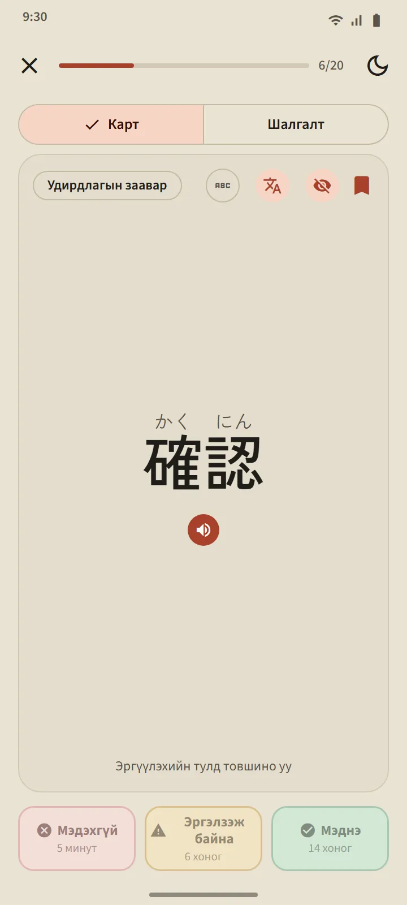
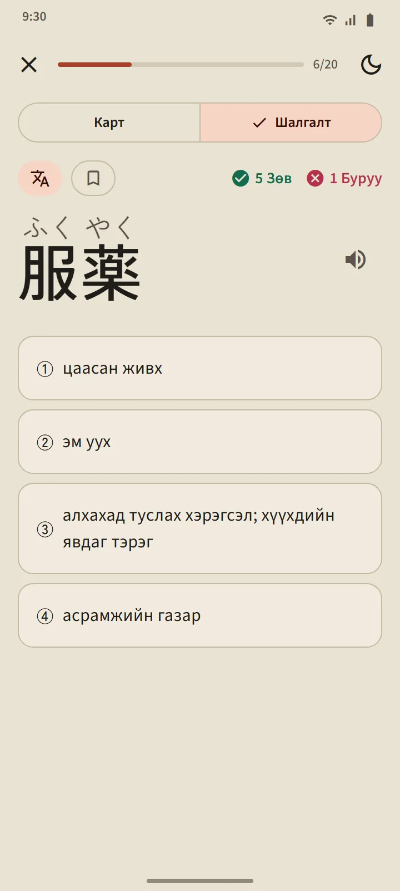
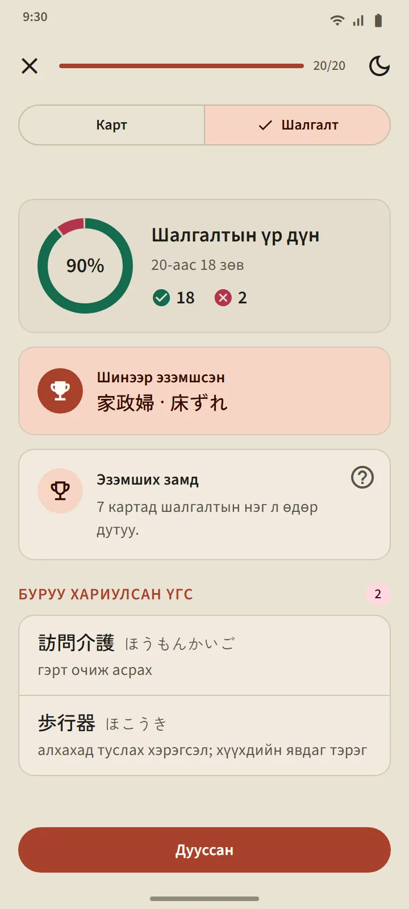
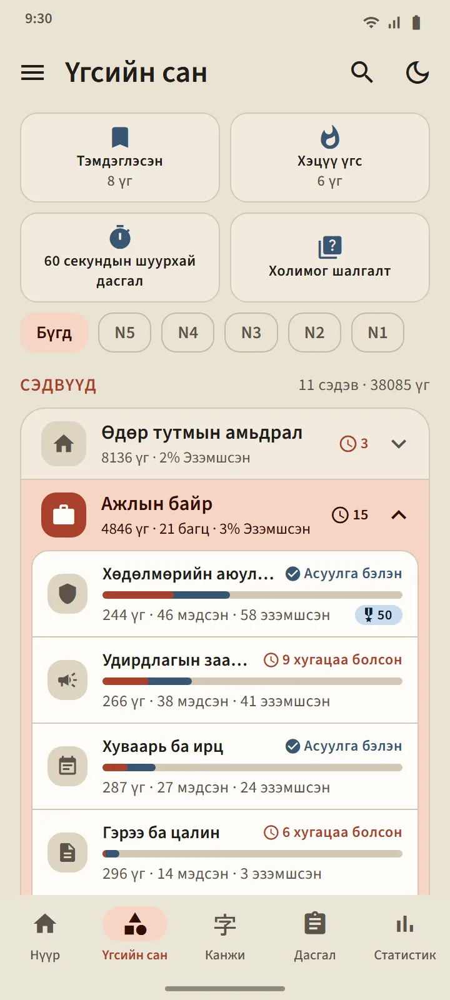
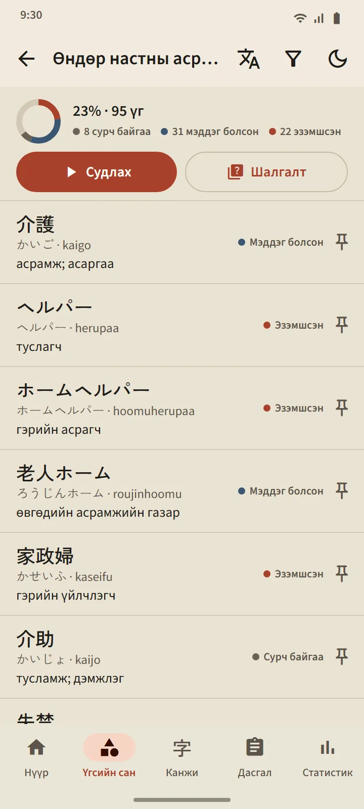
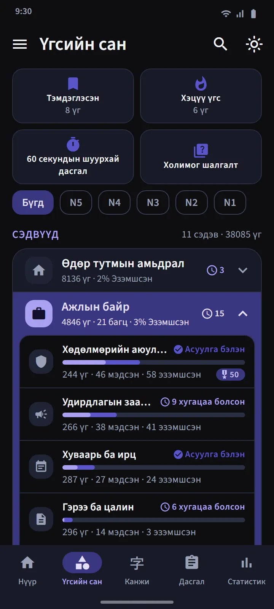
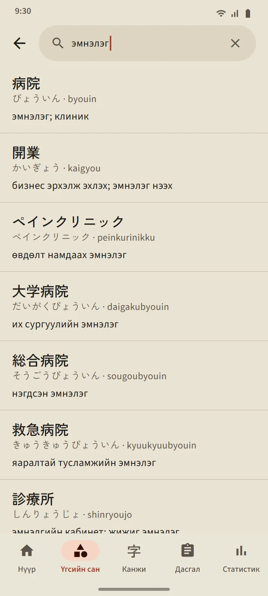
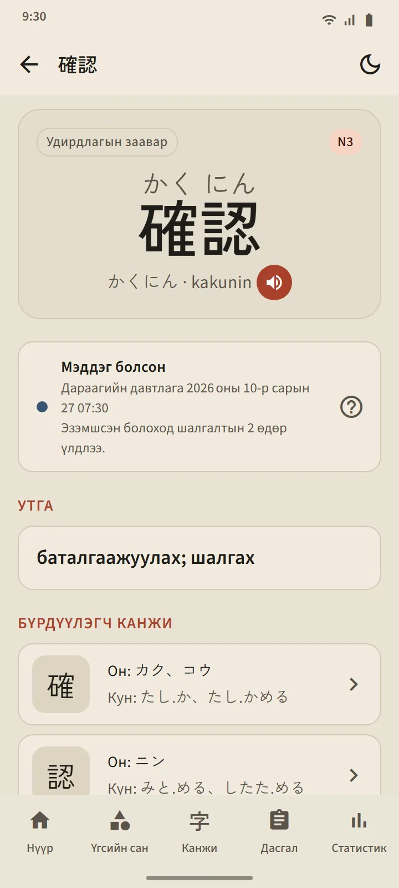

Мартах гэж байгааг тань мэддэг картууд
Картын нүүрэнд үг (хүсвэл фуриганатай) харагдана. Дараад эргүүлбэл уншлага, ромажи, утга, бүрдүүлэгч канжи, мөн дуудлагын товч гарна. Дараа нь гурван товчны нэгээр өөрийгөө үнэлнэ.
Товлолтыг орчин үеийн картын аппуудад хэрэглэдэг зайтай давталтын алгоритм FSRS хийдэг. Товч бүр үг хэзээ эргэж ирэхийг — хэдэн минут, өдөр эсвэл долоо хоногийн дараа — харуулна. Та Мэднэ гэж хэдий чинээ олон хариулна, завсар төдий чинээ урт болно.
- Мэдэхгүй нь үгийг аль ч шатнаас Сурч байгаа шат руу буцаана.
- Эргэлзэж байна нь завсрыг богиносгоно.
- Мэднэ нь үгийг Мэддэг болсон шатанд аваачиж, дараагийн давтлагыг холдуулна.

Дөрвөн шат, Эзэмшсэн нь батлагдах ёстой
Үг бүр дөрвөн шатаар өгсөнө: Шинэ, Сурч байгаа, Мэддэг болсон, Эзэмшсэн. Карт дээр Мэднэ гэж дарахад үг зөвхөн Мэддэг болсон шатанд хүрнэ. Эзэмшсэн шатанд хүрэхийн тулд шалгалтад гурван өөр өдөр зөв хариулах ёстой. Эзэмшсэн үгсийг хугацаа нь болоход үргэлж дахин шалгана, буруу хариулбал доош буурна.
Багцын шалгалт нь түүний 20 үг Мэддэг болсон эсвэл Эзэмшсэн болмогц нээгдэнэ (жижиг багц бүх үгээ мэддэг болмогц нээгдэнэ). Асуулт хоёр чиглэлтэй: үгээс утга, утгаас үг. Төгсгөлд шинээр эзэмшсэн, нэг алхам дутуу, буруу хариулсан үгсийг харуулна.


Сэдвээр суралцаж, үг бүрийг хянаарай
Үгсийн сан таб 11 бүлэгт хуваагдах бөгөөд бүлэг бүрт жижиг багцууд байна. Дээрх шүүлтүүр бүгдийг JLPT-ийн нэг түвшинд нарийсгана. Багц бүр өөрийн дэлгэцтэй: гүйцэтгэлийн хувийн цагираг, үг бүрийн төлөвтэй үгсийн жагсаалт, Сурч байгаа/Мэддэг болсон/Эзэмшсэн шүүлтүүр, Судлах ба Шалгалт товч.
Ажлын байр бүлэгт Японд ажиллахаар явах хүмүүст зориулсан 21 багц бий: Хөдөлмөрийн аюулгүй байдал, Удирдлагын заавар, Хуваарь ба ирц, Гэрээ ба цалин, Багаж ба хэмжих хэрэгсэл, Логистик ба агуулах, Оффис ба бичиг баримт, Хүнс боловсруулах үйлдвэр, Өндөр настны асрамж, Үйлдвэр ба үйлдвэрлэл, Үйлдвэрийн машин, Электроник ба цахилгаан, Барилга, Ресторан ба гал тогоо, Хөдөө аж ахуй, Усан онгоцны үйлдвэр, Барилгын цэвэрлэгээ, Загасны аж ахуй, Автомашин ба засвар, Нислэг ба нисэх буудал, Зочид буудлын үйлчилгээ. Японд амьдрахад зориулсан тээвэр, дэлгүүр ба мөнгө, гэр ба тавилгын багцууд, мөн Нийгэм ба захиргаа ба Бие ба эрүүл мэнд бүлгүүд байна.
| Бүлэг | Багц |
|---|---|
| Өдөр тутмын амьдрал | 16 |
| Ажлын байр | 21 |
| Нийгэм ба захиргаа | 8 |
| Бие ба эрүүл мэнд | 8 |
| Зан чанар ба сэтгэл хөдлөл | 8 |
| Үгсийн аймаг | 5 |
| Технологи ба медиа | 4 |
| Байгаль ба шинжлэх ухаан | 10 |
| Эрдэм шинжилгээ ба үзэл бодол | 8 |
| Соёл ба шашин | 4 |
| Спорт ба тоглоом | 3 |


Тусгай багц ба хурдан дасгал
Бүлгүүдийн жагсаалтын дээр бүх багцаас сонгон авдаг гурван багц байна: Тэмдэглэсэн (таны тэмдэглэсэн үгс), Хэцүү (карт дээр байнга мартдаг, шалгалтад алддаг үгсээр өөрөө дүүрнэ), 60 секундын шуурхай дасгал (нэг минутад багтах хэдэн ч карт). Дөрөв дэх хавтан Холимог шалгалт нь бүх багцын Мэддэг болсон ба Эзэмшсэн үгсийг нэг дор шалгана.

38,085 үгтэй халаасны толь
Толгой хэсэг дэх хайлтын дүрс ямар ч үгийг канжи, кана, ромажи эсвэл утгаар олно. Үр дүнг тохирох байдлаар эрэмбэлдэг бөгөөд ромажийг үсгийн ялгааг тэвчин тааруулдаг: shinbun ба shimbun, koohii ба kōhī, arigato ба arigatou бүгд нэг үгийг олно. Үг бүр дэлгэрэнгүй хуудастай: түүний шат ба дараагийн давтлага, утга, уншлагатай нь бүрдүүлэгч канжи, дуудлагын товч.


Түвшин ба утгын хэл
Үгийн түвшин нь тооцоо юм: Япон сан (Japan Foundation) албан ёсны үгсийн жагсаалт нийтэлдэггүй тул хуучин JLPT жагсаалт ба хэрэглээний давтамжаас гаргасан. Тусдаа «JFT» үгийн түвшин байхгүй: JFT-Basic нь N5 ба N4-тэй ижил үндсэн үгсийн сан дээр ажлын байрны үгсийг нэмж шалгадаг.
Утга нь 11 хэлээр бүрэн. Кхмер ба хятад хэл үнэгүй бүх үгийг хамарна; хараахан орчуулаагүй үгийг англиар харуулна. Орчуулгын хэлийг Тохиргоо хэсэгт интерфейсийн хэлээс тусад нь сонгож болно.
| Түвшин | Үг | Үнэгүй |
|---|---|---|
| N5 | 1,030 | 1,007 |
| N4 | 2,044 | 1,503 |
| N3 | 11,230 | 4,097 |
| N2 | 11,309 | 2,290 |
| N1 | 12,472 | 503 |